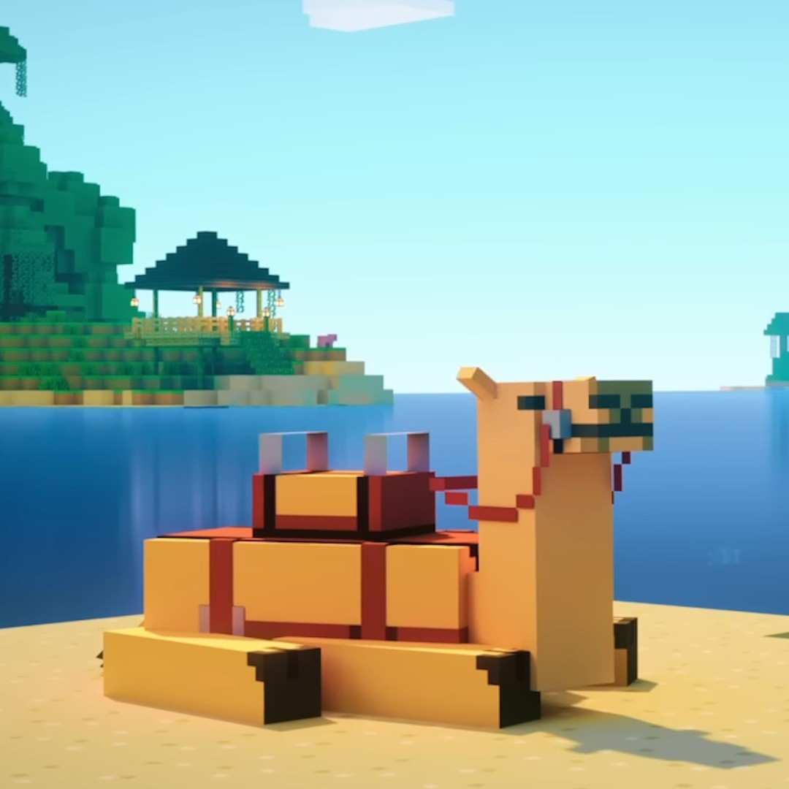
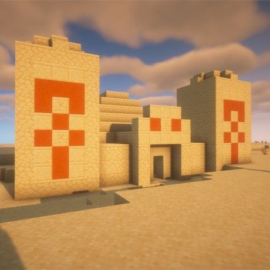
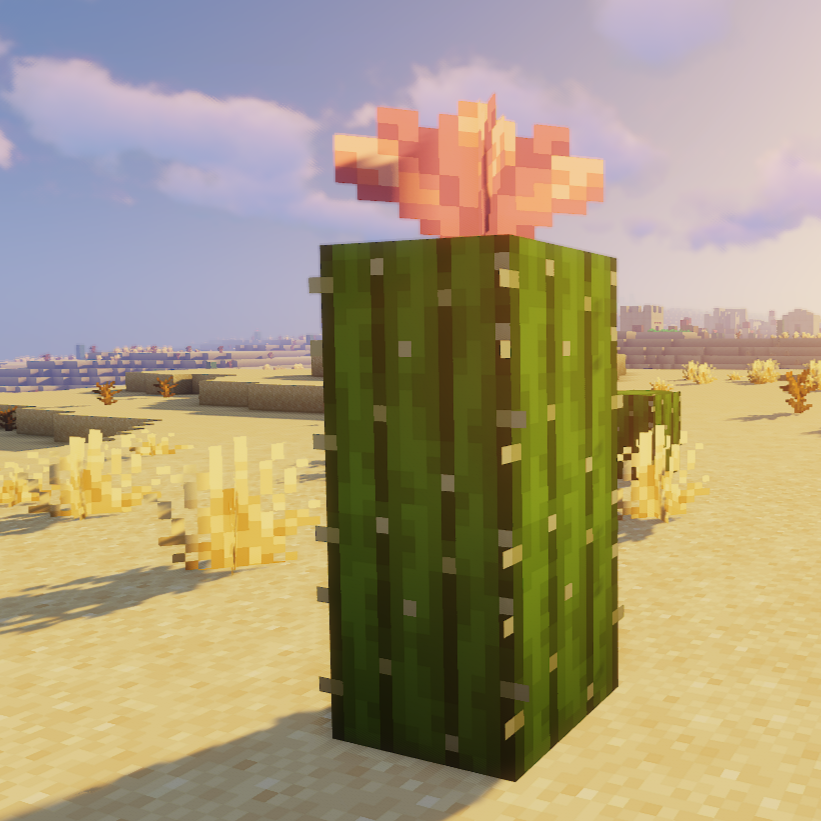

Minecraft ChatBot
Dieser ChatBot wurde im Rahmen des Kurses "Internettechnologien" im zweiten Semester des Studiengangs "Software-Design" entwickelt.
Dieser ChatBot wurde im Rahmen des Kurses "Internettechnologien" im zweiten Semester des Studiengangs "Software-Design" entwickelt.
Der Bot hat zu jedem Biome spezifische Intents, um relevante Informationen bereitzustellen.

Tiere

Strukturen

Pflanzen